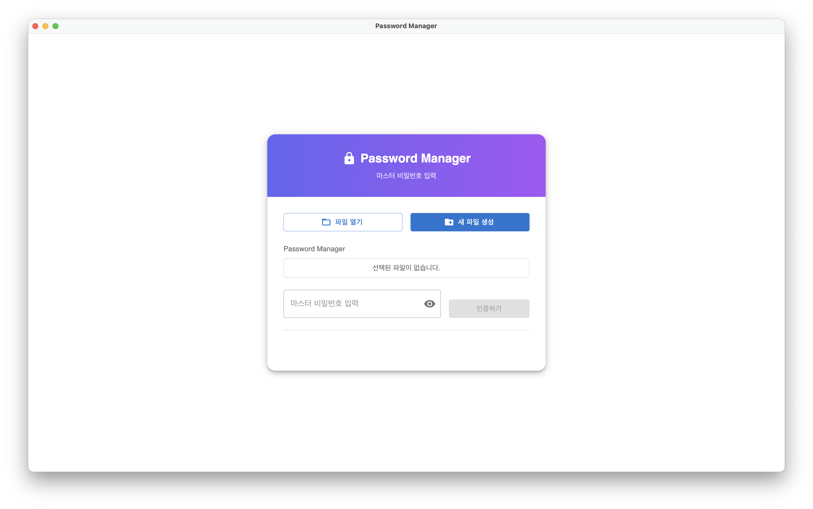
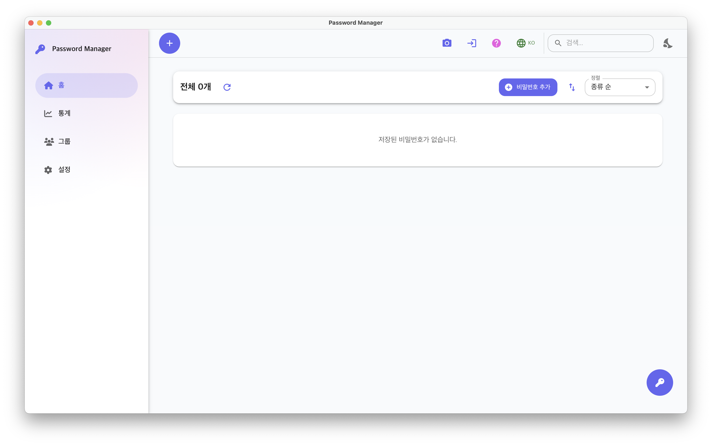
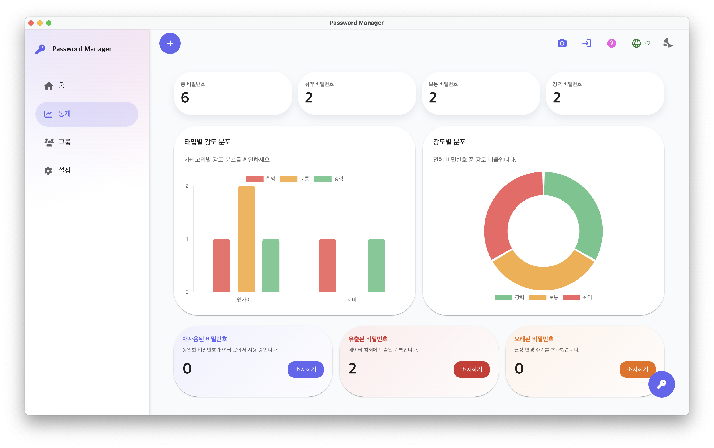
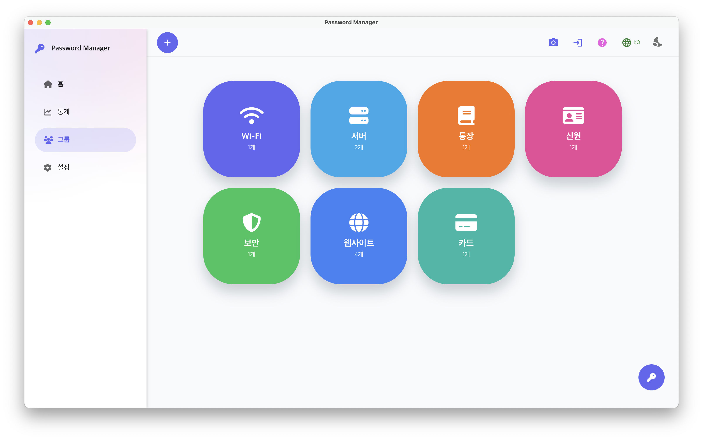

아름답고 유용한 패스워드 매니저를 소개합니다
이 문서는 패스워드 매니저의 주요 기능과 사용 방법을 안내합니다. 처음 사용하는 분도 빠르게 이해하고 활용할 수 있도록 구성했습니다.
1. 시작하기
애플리케이션 실행 시 사용자는 비밀번호 데이터 파일을 선택하거나 새 파일을 생성할 수 있습니다. 최근 열람한 파일 목록과 파일 열기, 새 파일 만들기 기능이 제공되며, 파일을 선택한 뒤 하단 입력란에 마스터 키를 입력하면 홈 화면으로 이동합니다. 비밀번호 입력란에는 가시성 토글 기능이 있어 입력한 내용을 안전하게 확인할 수 있습니다.
2. 들어가기
2.1 홈 페이지
홈 페이지는 등록된 비밀번호 항목을 일람으로 제공하는 기본 관리 화면입니다.
상단에는 다음 기능이 배치되어 있습니다.
- 비밀번호 생성기
- 스크린샷 허용/금지
- 도움말 페이지 이동
- 언어 전환
- 검색 입력창
- 다크 모드 전환
목록 영역에서는 다음과 같은 기능을 제공합니다.
- 전체 항목 수 표시
- 새 항목 추가 버튼
- 정렬 옵션(추가일, 이름, 유형)
- 정렬 방향 전환(오름차순/내림차순)
각 항목 카드는 즐겨찾기 여부와 검색·정렬 조건에 따라 재배치되며, 다음과 같은 작업을 지원합니다.
- 즐겨찾기 토글
- 항목 편집 및 삭제
- 필드별 복사
- 비밀번호 조회 및 복사
데이터는 새로고침 버튼을 통해 최신 상태로 유지할 수 있습니다. 또한, 보안을 위해 필드 복사 후 30초가 지나면 클립보드에서 자동으로 제거됩니다.
2.2 비밀번호 생성기

비밀번호 생성기는 길이, 문자 유형, 특수문자 집합을 조합하여 강력한 임의 비밀번호를 만들어 주는 기능입니다.
주요 기능은 다음과 같습니다.
- 길이 슬라이더(4~32자)를 통한 비밀번호 길이 조절
- 소문자, 대문자, 숫자, 특수문자, 단어 포함 여부 선택
- 특수문자 목록 사용자 정의
- 옵션 변경 시 즉시 새로운 비밀번호 생성
- 생성 결과를 표시하는 읽기 전용 입력란
- 비밀번호 강도 게이지 및 품질 안내 메시지
- 복사 버튼을 통한 클립보드 복사 및 성공/실패 알림
이 기능을 통해 사용자는 민감한 비밀번호를 직접 생각해내거나 입력하지 않고도, 안전한 비밀번호를 손쉽게 생성하여 사용할 수 있습니다.
3. 통계 페이지
통계 페이지는 등록된 비밀번호의 보안 상태를 시각적으로 분석·점검하는 대시보드입니다.
주요 구성 요소는 다음과 같습니다.
- 상단 요약 카드: 전체 개수와 강도별 분포 표시
- 유형별 강도 분포 막대 차트
- 전체 강도 비율 도넛 차트
하단의 “재사용/유출/오래된 비밀번호” 카드에서는 각 취약 항목의 개수를 확인할 수 있으며, “조치하기” 버튼을 통해 해당 조건을 만족하는 비밀번호 목록을 모달로 열어 직접 편집·삭제할 수 있습니다.
4. 그룹 페이지
그룹 페이지는 비밀번호를 유형별로 모아 탐색할 수 있는 그리드형 요약 화면입니다. 홈 화면에서 등록한 유형에 따라 각 그룹 카드에 항목 개수가 표시됩니다.
사용자가 그룹 카드를 클릭하면 해당 유형에 속한 항목이 모달에 리스트 형태로 표시되며, 이 모달에서 다음 작업을 수행할 수 있습니다.
- 비밀번호 목록 열람
- 항목 편집 및 삭제
- 즐겨찾기 항목 우선 정렬
목록이 비어 있거나 로딩 중인 경우에는 현재 상태를 안내하는 메시지가 표시됩니다.
5. 설정 페이지

설정 페이지는 파일 경로 확인, 마스터 키 변경, 자동 잠금 시간 설정, 그리고 보안을 위한 ZKP 기반 동기화 기능을 통합한 관리 화면입니다.
5.1 파일 경로 및 마스터 키 관리
데이터 파일 위치는 읽기 전용 필드로 표시되며, 기존 및 신규 마스터 키를 입력한 후 변경 버튼을 통해 인증 정보를 갱신할 수 있습니다.
5.2 자동 잠금 설정
자동 잠금 섹션에서는 1, 3, 5, 10, 30분 중 비활성 시간을 선택하여 자동 로그아웃 시간을 지정할 수 있습니다. 설정 변경 시 타이머는 즉시 재설정됩니다.
5.3 ZKP 기반 동기화
하단 섹션에서는 ZKP 계정을 위한 아이디와 비밀번호를 입력하고, 다음 작업을 버튼을 통해 수행할 수 있습니다.
- 회원가입
- 로그인
- 데이터 업로드
- 데이터 다운로드
모든 작업 결과는 상태 메시지로 안내됩니다. ZKP 모듈은 민감한 비밀번호 데이터를 서버에 직접 노출하지 않고도 사용자를 인증하고 동기화할 수 있도록 설계되어 있으며, 업로드 및 다운로드 과정에서 데이터는 항상 암호화된 형태로 전송됩니다.